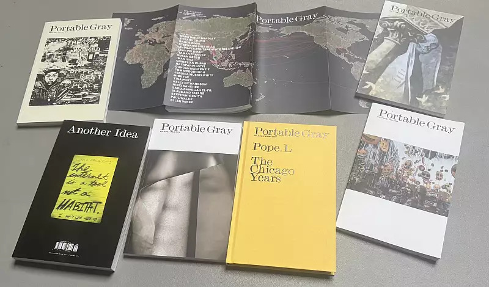

Portable Gray Critical Art Soirée
On the occasion of the 2026 College Art Association’s annual conference held in Chicago, The University of Chicago’s Richard and Mary L. Gray Center for Arts and Inquiry invite you, Thursday, February 19th, 6pm, to join us for our Portable Gray Critical Art Soirée, at 929 E 60th Street. featuring a roundtable on the state of criticism with Adrienne Brown, Romi Crawford, Tina Post, and Dieter Roelstraete; moderated by Zachary Cahill, a screening of Cauleen Smith’s film Three Songs About Liberation, and a performance by Ian F. Svenonius and Sandi D.
Copies of the journal will be available along with the book by Romi Crawford, Breaking Cinema: Cauleen Smith, Experimental Film 2010-2023. *The event is free and open to the public. Food and drinks will be served.
6:00-6:30pm reception to be followed immediately by film screening, panel discussion, and performance.
About panelists and presenters
Adrienne Brown is Professor in the Departments of English and Race, Diaspora, and Indigeneity at the University of Chicago and the Director of Arts + Public Life, a hub for artistic exploration, expression, and exchange that centers people of color and fosters neighborhood vibrancy on Chicago’s South Side. She is co-editor with Valerie Smith of the volume Race and Real Estate (2015) and the author of The Black Skyscraper: Architecture and the Perception of Race, winner of the 2018 First Book Prize from the Modernist Studies Association, and The Residential is Racial: A Perceptual History of Mass Homeownership, published by Stanford University Press in 2024.
Romi Crawford, PhD, is a professor in the visual and critical studies and liberal arts departments at the School of the Art Institute in Chicago. Her research explores areas of race and ethnicity as they relate to American visual culture including art, film, and photography, as well as the logics of racial and ethnic artistic inheritance in the form of archives, pedagogies, and intergenerational collaboration. Crawford is the editor of Fleeting Monuments for the Wall of Respect (Green Lantern Press, 2021); coeditor of The Wall of Respect: Public Art and Black Liberation in 1960s Chicago (Northwestern University Press, 2017); and the author of many essays including “Surface and Soul in the Work of Nick Cave,” in Nick Cave: Forothermore (DelMonico Books/Museum of Contemporary Art Chicago, 2022), and “Reading Between the Photographs: Serious Sociality in the Kamoinge Photographic Workshop,” in Working Together: Louis Draper and the Kamoinge Workshop (Duke University Press, 2020). In 2019 Crawford, along with artist Theaster Gates, received a Gray Center Mellon Collaborative Fellowship for their project The Black Image Corporation. She was previously curator and director of the education department at the Studio Museum in Harlem and initiated and conceived the Black Arts Movement School Modality in 2021 and the New Art School Modality in 2023.
Tina Post is Associate Professor of English and Theater and Performance at the University of Chicago. Her recent academic monograph, Deadpan: The Aesthetics of Black Inexpression, is the first book in NYU Press’s Minoritarian Aesthetics series. Her scholarly articles have appeared in Modern Drama, TDR: The Drama Review, International Review of African American Art (IRAAA), ASAP/Journal, and the edited collection Race and Performance after Repetition (Duke University Press, 2020). Her creative work can be found in Imagined Theaters, Stone Canoe, and The Appendix.
Dieter Roelstraete is curator at the Neubauer Collegium for Culture and Society at the University of Chicago, where he has organized exhibitions of Betye Saar, The Otolith Group, Christopher Williams, Rick Lowe, Pope.L, Martha Rosler, and many others. He previously served on the curatorial team that organized Documenta 14. Prior to that, he served as the Manilow Senior Curator at the Museum of Contemporary Art Chicago (2012–15), where he organized and co-organized a number of highly regarded shows, including The Way of the Shovel: Art as Archaeology (2015); The Freedom Principle: Experiments in Art and Music 1965 to Now (2015); and Kerry James Marshall: Mastry (2016). From 2003 to 2011 Roelstraete was a curator at the Museum van Hedendaagse Kunst Antwerpen. Recent free-lance projects include exhibitions at the Fondazione Prada in Milan and Venice, the Museum of Modern Art in Warsaw, the Garage Museum for Contemporary Art in Moscow, S.M.A.K. in Ghent, and the George Economou Collection in Athens. Roelstraete, who was trained as a philosopher at the University of Ghent, has published extensively on contemporary art and related philosophical issues.